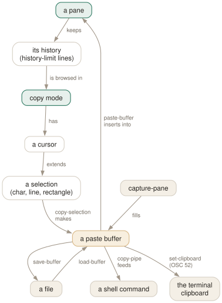

Day 04
Copy mode and buffers
Scrollback, search, selection — and getting text back out again.
By the end of today you can
- scroll and search a pane's history without touching the mouse
- select text — by character, line or rectangle — and paste it into another pane
- get a pane's output into a file, a shell command, or the system clipboard
A pane can be in a mode
Normally your keystrokes go straight through to the program in the pane. Sometimes tmux needs the keyboard for itself — to let you scroll, to let you pick from a list — and for that a pane can be put into a mode. Copy mode is the one you will live in; view mode (read-only output, as when you press C-b?) and choose mode (the tree behind C-bw) are the same machinery.
Enter with C-b[. A position indicator appears in the top-right corner showing where you are and how many lines of history exist. Leave with q in vi mode or Escape in emacs mode.
make[2]: Entering directory '/home/j/src/app' [42/1337]
CC src/parse.c
CC src/render.c
src/render.c:88:12: warning: unused variable 'tmp'
CC src/main.c
The [42/1337] is that indicator: 42 lines up, 1337 lines of history behind this pane.

set-buffer, load-buffer and capture-pane are the others) and pasting is only one of four ways to empty it.vi or emacs, decide once
Copy mode has two complete key sets, chosen by the mode-keys option. The default is emacs unless your $EDITOR or $VISUAL contains “vi”, in which case tmux quietly gives you vi keys. Since that depends on your environment, it is worth setting explicitly tomorrow so that your muscle memory is the same on every machine.
vi keys
h j k l move g / G top / bottom
w b e by word C-u/C-d half page
0 $ ^ line ends H M L top/mid/bottom line
/ ? search fwd/back n / N repeat / reverse
f x t x jump to char x ; , repeat jump
Space start selection v rectangle toggle
V select line o swap selection end
Enter copy and exit q leave
emacs keys
arrows move M-< / M-> top / bottom
M-f M-b by word M-Up/M-Down half page
C-a C-e line ends M-r middle line
C-s / C-r incremental search (press again to repeat)
C-Space start selection R rectangle toggle
M-w copy and exit Escape leave
C-g clear selection
Searching, which is the actual reason to be here
Scrolling is a poor way to find something in 20,000 lines. In vi mode / searches forward and ? backward, both taking a regular expression; n and N repeat and reverse. In emacs mode C-s and C-r search incrementally, and pressing them again with an empty prompt repeats the last search.
Searches wrap around the end of the history unless you turn wrap-search off, and the number of matches appears in the position indicator as you go.
Selecting and copying
The sequence is always the same three moves:
- Move the cursor to where the text starts.
- Begin a selection (Space in vi, C-Space in emacs). Optionally switch to rectangle mode (v / R) to grab a column instead of full lines.
- Move to the end and copy (Enter in vi, M-w in emacs). Copy mode exits and the text is in a buffer.
Rectangle selection is the one worth remembering. Column three of docker ps, the PID column of ps aux, one field out of a wall of log lines — these are miserable with a mouse and trivial with v.
Paste with C-b]. Note that a paste is “typed” into the pane, so it lands wherever the cursor is, and newlines act as Enter. That is fine in an editor and occasionally alarming in a shell — tmux uses bracketed paste when the program has asked for it, which is what stops a multi-line paste from executing itself in a modern shell.
Buffers are a stack
tmux does not have a clipboard; it has a stack of paste buffers. Each copy pushes a new automatically-named buffer (buffer0, buffer1, …), the oldest falling off once buffer-limit is reached.
- C-b#
- list the buffers with a sample of each
- C-b=
- pick one interactively — with a preview, and d to delete, e to open it in an editor
- C-b-
- delete the newest buffer
From a script or the command prompt they are all addressable by name:
$ tmux set-buffer -b notes "some text" # create a named buffer
$ tmux load-buffer -b conf ~/.tmux.conf # from a file
$ tmux save-buffer -b notes /tmp/notes.txt # back out to a file
$ tmux show-buffer | wc -l # the newest one, on stdout
$ tmux paste-buffer -b conf -t api:1.0 # into a particular pane
Getting text out of tmux entirely
Three exits, in increasing order of usefulness:
- To a file, non-interactively.
tmux capture-pane -p -S - > out.txtdumps the entire history of the current pane.-S -3000limits it,-ekeeps the colour escape sequences,-Jrejoins wrapped lines. This is the right way to attach a failing run to a ticket. - Through a pipe. The copy-mode command
copy-pipesends the selection to a shell command as well as to a buffer. With no argument it uses thecopy-commandoption, so setting that once makes every copy also go to your clipboard tool. - To the terminal's own clipboard. With
set-clipboardon, tmux emits the OSC 52 escape sequence asking the terminal to set its clipboard. This works through ssh, because it is just terminal output — which makes it the only mechanism that solves the remote case. Your terminal emulator has to allow it; many require the feature to be enabled explicitly.
New vocabulary
Keys
| Key | Does |
|---|---|
| C-b[ | Enter copy mode at the bottom of the history. |
| C-bPageUp | Enter copy mode already scrolled one page up. |
| C-b] | Paste the most recent buffer into this pane. |
| C-b= | Choose which buffer to paste, from a list with previews. |
| C-b# | List the paste buffers. |
| C-b- | Delete the most recent buffer. |
| q | In copy mode: leave. (Escape in emacs mode.) |
| /? | vi mode: search forward / backward; n and N repeat. |
| C-sC-r | emacs mode: incremental search forward / backward. |
| Space | vi mode: start a selection. C-Space in emacs mode. |
| v | vi mode: toggle rectangle (block) selection. R in emacs mode. |
| Enter | vi mode: copy the selection and leave. M-w in emacs mode. |
| gG | vi mode: top / bottom of the history. |
Commands
| Command | Does |
|---|---|
copy-mode | Enter copy mode; -u starts a page up, -e exits at the bottom. |
send-keys -X begin-selection | How every copy-mode key is implemented. -X means “to the mode”. |
list-buffers | Show the buffer stack. Alias lsb. |
set-buffer "text" | Put a literal string into a buffer from a script. |
load-buffer file | Read a file into a buffer (- for stdin). |
save-buffer file | Write a buffer out to a file (- for stdout). |
show-buffer | Print the newest buffer. |
paste-buffer -t :1.0 | Paste into a specific pane, not necessarily this one. |
delete-buffer -b name | Remove one buffer. |
capture-pane -p -S -3000 | Dump the last 3000 lines of history to stdout. |
clear-history | Throw away a pane's scrollback. Alias clearhist. |
Options
| Option | Does |
|---|---|
mode-keys | vi or emacs key bindings inside copy mode. Default emacs. |
history-limit | Lines of scrollback kept per pane. Default 2000, which is stingy. |
copy-command | Shell command that bare copy-pipe pipes to — your clipboard tool. |
set-clipboard | Whether tmux sets the terminal's clipboard with OSC 52. |
word-separators | What counts as a word boundary for w and b. |
wrap-search | Whether searches wrap around the end of the history. On by default. |
Drillsdo these in a real terminal, today
Self-check
Answer out loud first, then unfold.
You press C-b[, scroll up, and now your usual keys do strange things. What is going on?
The pane is in a mode. While a pane is in copy mode its keys come from the copy-mode or copy-mode-vi key table instead of going to the program, and each of those bindings runs send-keys -X something. Leave with q (vi) or Escape (emacs) and the keys go back to your shell.
Why does copying inside tmux over ssh often not reach your laptop's clipboard, and what are the two ways out?
Because the copy landed in a tmux paste buffer on the remote server, which knows nothing about your local clipboard.
Route one is OSC 52: with set-clipboard on, tmux emits an escape sequence asking the terminal you are sitting at to set its own clipboard, which works through ssh because it travels as terminal output. Route two is copy-command — pipe the selection to a local tool (wl-copy, xclip -sel c, pbcopy), which only helps when tmux is running on the same machine as the display.
What is the difference between capture-pane and copy mode?
None conceptually — both put pane content into a buffer — but capture-pane is non-interactive, so it belongs in scripts. capture-pane -p -S - prints the whole history to stdout; without -p it fills a buffer instead. It is the right tool for “put the last 200 lines of that failing job into a file” and it needs nobody sitting at the keyboard.
Your scrollback runs out after a couple of screens of a big build. Fix?
history-limit defaults to 2000 lines per pane. Raise it in ~/.tmux.conf — 50000 is unremarkable on a modern machine. Note that the limit is applied when a pane is created, so raising it does not retroactively lengthen the history of panes that already exist.
Cheat sheet
C-b [ # enter copy mode C-b PageUp enter, scrolled up
/ ? n N # search (vi) C-s / C-r search (emacs)
Space # begin selection C-Space begin selection (emacs)
v # rectangle toggle R rectangle (emacs)
Enter # copy and exit M-w copy and exit (emacs)
q # leave g / G top / bottom
C-b ] # paste newest buffer C-b = pick C-b # list C-b - delete
tmux capture-pane -p -S - > out.txt # the whole history, no copy mode
Everything through Day 04
Keys
| Key | Does |
|---|---|
| C-bd | Detach this client. The session keeps running. |
| C-b$ | Rename the current session. |
| C-b? | List every key binding. q to leave. |
| C-b: | Open the tmux command prompt. |
| C-bt | Show a clock — a harmless way to prove the prefix works. |
| C-bC-b | Send a literal C-b to the program in the pane. |
| C-bc | Create a window at the lowest free index. |
| C-b, | Rename the current window — and pin the name. |
| C-bn | Next window by index. |
| C-bp | Previous window by index. |
| C-bl | Back to the last window you were in. The one to actually learn. |
| C-b0 | Jump straight to window 0 (likewise 1 … 9). |
| C-b' | Prompt for a window index — for windows above 9. |
| C-bw | Choose a window from an interactive tree with previews. |
| C-b& | Kill the current window, after a confirmation. |
| C-b. | Move the current window to a different index. |
| C-bi | Flash some information about the current window. |
| C-b% | Split left/right. The |-shaped key gives you a |-shaped border. |
| C-b" | Split top/bottom. |
| C-bLeft | Move to the pane to the left (likewise Right, Up, Down). |
| C-bo | Next pane in creation order. |
| C-b; | The previously active pane — the C-bl of panes. |
| C-bq | Flash the pane numbers; press a digit while they show to jump there. |
| C-bz | Zoom: this pane fills the window. Press again to restore. |
| C-bx | Kill this pane, after a confirmation. |
| C-bSpace | Cycle to the next preset layout. |
| C-bM-1 | even-horizontal — side by side in a row. |
| C-bM-2 | even-vertical — stacked in a column. |
| C-bM-3 | main-horizontal — one big pane on top. |
| C-bM-4 | main-vertical — one big pane on the left. |
| C-bM-5 | tiled — a grid. |
| C-bE | Spread the current pane and its neighbours out evenly. |
| C-bC-Left | Resize by one cell (hold to repeat). M-Left does five. |
| C-b{ | Swap this pane with the previous one; C-b} with the next. |
| C-bC-o | Rotate every pane through the layout; C-bM-o rotates back. |
| C-b* | Open a floating pane over the window — hovers above the layout. |
| C-b[ | Enter copy mode at the bottom of the history. |
| C-bPageUp | Enter copy mode already scrolled one page up. |
| C-b] | Paste the most recent buffer into this pane. |
| C-b= | Choose which buffer to paste, from a list with previews. |
| C-b# | List the paste buffers. |
| C-b- | Delete the most recent buffer. |
| q | In copy mode: leave. (Escape in emacs mode.) |
| /? | vi mode: search forward / backward; n and N repeat. |
| C-sC-r | emacs mode: incremental search forward / backward. |
| Space | vi mode: start a selection. C-Space in emacs mode. |
| v | vi mode: toggle rectangle (block) selection. R in emacs mode. |
| Enter | vi mode: copy the selection and leave. M-w in emacs mode. |
| gG | vi mode: top / bottom of the history. |
Commands
| Command | Does |
|---|---|
tmux | Start the server if needed and create a session, attached. |
tmux new -s work | Create a session named work. |
tmux new -A -s work | Attach to work, creating it only if absent. |
tmux ls | List sessions on this server. Alias for list-sessions. |
tmux attach -t work | Attach this terminal to work. |
tmux attach -d -t work | Attach, detaching any other client first. |
tmux detach | Detach the current client, from inside or by target. |
tmux rename-session api | Rename the current session. |
tmux kill-session -t work | Destroy a session and everything in it. |
tmux kill-server | Destroy every session. The nuclear option. |
new-window | Create a window. Alias neww. |
new-window -n logs | Create it with a fixed name. |
new-window -c ~/src/api | Create it with that working directory. |
new-window -d | Create it but do not switch to it. |
new-window -a -t 2 | Insert after window 2, shifting the rest along. |
rename-window api | Rename the current window. |
select-window -t :3 | Switch to window 3 of the current session. |
last-window | Switch to the previously current window. |
kill-window -t :logs | Kill a window by name. |
list-windows | List windows in the session. Alias lsw. |
choose-tree -w | The interactive picker behind C-bw. |
split-window -h | Split left/right. Alias splitw. |
split-window -v | Split top/bottom. The default if neither is given. |
split-window -c ~/src | Start the new pane in that directory. |
split-window -l 30% | Give the new pane 30% of the space (-l 20 for cells). |
split-window -b | Put the new pane before — above or to the left of — the old one. |
split-window -f -h | Split the full window height, not just the current pane. |
select-pane -L | Move to the pane on the left (-R -U -D likewise). |
select-pane -t 2 | Move to pane 2 of this window. |
last-pane | Back to the previously active pane. |
resize-pane -Z | Toggle zoom. |
resize-pane -x 100 -y 30 | Resize to an absolute size, cells or %. |
select-layout tiled | Apply a named layout. |
select-layout -E | Spread evenly (what C-bE runs). |
select-layout -o | Undo the most recent layout change. |
list-panes | List panes with index, size and command. Alias lsp. |
kill-pane -a | Kill every pane except this one. |
swap-pane -D | Swap with the next pane, keeping focus behaviour sane. |
copy-mode | Enter copy mode; -u starts a page up, -e exits at the bottom. |
send-keys -X begin-selection | How every copy-mode key is implemented. -X means “to the mode”. |
list-buffers | Show the buffer stack. Alias lsb. |
set-buffer "text" | Put a literal string into a buffer from a script. |
load-buffer file | Read a file into a buffer (- for stdin). |
save-buffer file | Write a buffer out to a file (- for stdout). |
show-buffer | Print the newest buffer. |
paste-buffer -t :1.0 | Paste into a specific pane, not necessarily this one. |
delete-buffer -b name | Remove one buffer. |
capture-pane -p -S -3000 | Dump the last 3000 lines of history to stdout. |
clear-history | Throw away a pane's scrollback. Alias clearhist. |
Options
| Option | Does |
|---|---|
automatic-rename | Window renames itself after the running command. On by default. |
automatic-rename-format | The format used when it does. Defaults to the pane's command. |
allow-rename | Whether a program in the pane may rename the window by escape sequence. |
main-pane-width | Width of the big pane in the main-vertical layouts. Accepts %. |
main-pane-height | Height of the big pane in the main-horizontal layouts. |
tiled-layout-max-columns | Cap the columns in the tiled layout; 0 means no cap. |
mode-keys | vi or emacs key bindings inside copy mode. Default emacs. |
history-limit | Lines of scrollback kept per pane. Default 2000, which is stingy. |
copy-command | Shell command that bare copy-pipe pipes to — your clipboard tool. |
set-clipboard | Whether tmux sets the terminal's clipboard with OSC 52. |
word-separators | What counts as a word boundary for w and b. |
wrap-search | Whether searches wrap around the end of the history. On by default. |